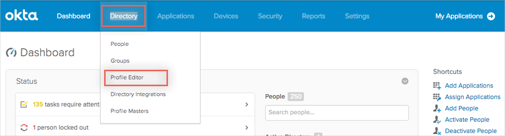
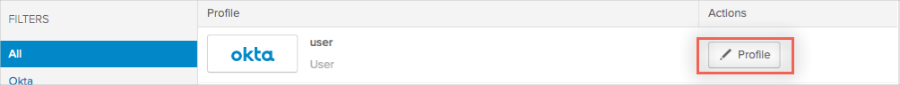
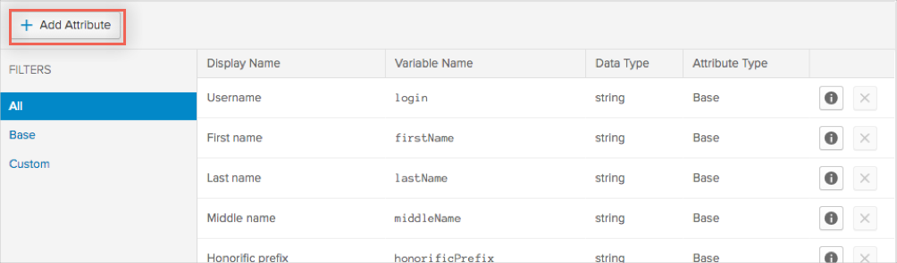
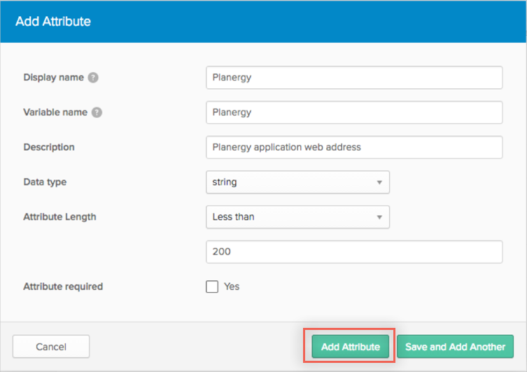
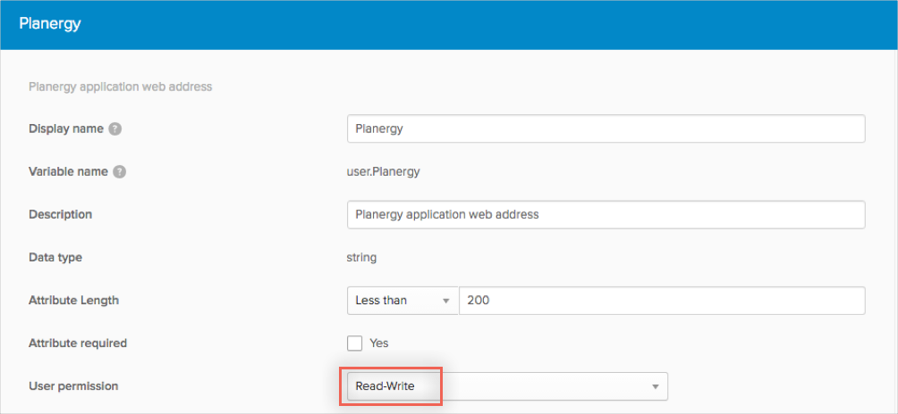

Contact Planergy Support at support@purchasecontrol.com and request that they enable SAML 2.0 for your account.
Include the following with your email request:
IDP Metadata: Copy and page the following:
Sign in to Okta Admin app to have this variable generated for you.
x.509 Certificate: Copy and paste the following in PEM Text Format:
Sign into the Okta Admin Dashboard to generate this variable.
IDP Issuer/Entity ID: Copy and paste the following:
Sign into the Okta Admin Dashboard to generate this variable.
Login URL/SignOn URL: Copy and paste the following:
Sign into the Okta Admin Dashboard to generate this variable.
Planergy Support will send you a confirmation email once SAML is set up.
Before Planergy can be used, a new base profile attribute needs to be added to your org. To do this, follow the instructions below:
Login to Okta as an administrator, then click Admin:
Navigate to Directory > Profile Editor:

In the Profile Editor, edit the base profile attributes of your org’s users by clicking the Profile button for Okta users:

Click Add Attributes to add a new base attribute:

Add a new attribute based on the values in the image below, then click Add Attribute:

By default, the Planergy attribute will be Read Only and only the admin can modify this value for users. If you want it to be updatable by users, edit the newly created attribute and set the user permission to Read-Write:

For SAML to Planergy to work, the Planergy attribute should always have a value. Depending on what user permission is assigned, the admin can either add it by modifying a user’s profile or a user can add the value himself. A user can add the value to this attribute through the by clicking Settings and editing his own profile
Done!
Notes:
IdP-initiated flows are supported.
SP-initiated flows and Just In Time (JIT) provisioning are not supported.